Skytrace verification report
- raw pixels are identical to IRSA's cutout service;
- wavelengths agree within 0.07 nm;
- resampled images agree with astropy's standard
reproject; - star fluxes agree with WISE to within 2–3%;
- WISE 0855's motion agrees with 297 NEOWISE detections.
P3. Prototype 3 audit: every calculation against the SPHEREx notebooks (14 Nov 2026)
aperture_photometry.py). On identical native pixels it equals the notebook's own functions to ≤2×10⁻⁶ in flux and error, and its bad-pixel decision matches in 47/47 exposures across 4 targets (tests/notebook_parity.py).| Step | Notebook | Skytrace before | Skytrace now | Check |
|---|---|---|---|---|
| MJy/sr → µJy | × per-pixel solid-angle map (cal-sapm-v3-2026-191) × 23.5044 | × header OMEGA_MEDIAN (scalar; per-pixel spread ±0.5%, up to 1.3%) | Per-pixel map, same file | 1 MJy/sr·arcsec² = 23.50443 µJy (astropy); parity ≤2×10⁻⁶ |
| Aperture | photutils CircularAperture r = 3, 4, 5 px, subpixel ×5 | r = 2 px, whole pixels by centre | r = 3 px, photutils subpixel ×5 | identical |
| Background | Annulus 7–16 px, sigma_clipped_stats(σ=3, 5 iters) median | 4–7 px, own clipping | Same as notebook | identical |
| Uncertainty | √ Σ VARIANCE × scale² (subpixel aperture) | Annulus scatter | Same as notebook | identical |
| Image used | Raw IMAGE (ZODI not subtracted; annulus removes it) | IMAGE − ZODI | Raw IMAGE | Zodi pre-subtraction changed faint WISE 0855 by up to 7%: removed |
| Bad pixels | Count CONTAINS_BAD_PIXEL flags in aperture (n_bad); plot keeps n_bad = 0 | Masked and filled; own list (included OUTLIER) | Same list and rule; flagged points hidden by default | 47/47 decisions agree |
| Flag bit numbers | Read from each file's MSKN keywords | Hard-coded DR1 table | Read per file | Same bits in DR1, DR1-deep, QR3, QR3-deep |
| Aperture correction | (not applied) | EE(r=2) 0.958–0.972 | EE(r=3) 0.986–0.996 from the file's ePSF: our only addition, labelled as such | 27 ePSFs per detector, spread <0.5% |
| Wavelength | WCS(key="W"), sip = None | Same | Same | unchanged (within 0.07 nm) |
P3.1 Independent checks after rebuilding all six fields
- Official DR1 spectral cube: Skytrace/cube median 0.997 and 1.010 for two isolated stars; every detector within ±3%.
- WISE W1/W2: median SPHEREx/WISE 1.04 (8 and 7 isolated stars; different bandpasses, so a few % is expected).
- Completeness: every image IRSA lists is in every field (R Dra capped at 700 of 2,493 on purpose).
- Barnard's Star and R Draconis saturate SPHEREx in every exposure (OVERFLOW, SUR_ERROR, BLOOM at the core), so the notebook rule leaves no clean points. The app says so instead of plotting unreliable numbers. Prototype 2 had plotted them, marked as flagged.
- Sky map: Mollweide round trip 2×10⁻¹³°; ecliptic and Galactic plane within 0.04″ of astropy.
- Live search on the Cloud Run build (clean environment, $PORT): 290 images in 85 s, same as IRSA's count.
0. Prototype 2 update: data sources audit and new checks
spherex_dr1 and spherex_qr3 (and their deep-survey versions). It then reads only the needed pixels of each file from the AWS location in that file's cloud_access entry. Running the guide's curl request at WISE 0855's position returns 258 images: the identical set Skytrace uses (258/258).| Item in the app | Source now | Before |
|---|---|---|
| 102 channel numbers and wavelengths | Official SPHEREx DR1 SPECTRAL_CHANNELS table (DR1 all-sky cube) | My own 17 log-spaced bins per detector |
| Detector wavelength ranges | Same official table (e.g. D1 0.74–1.12 µm) | Hard-coded (D1 0.75–1.09 µm, too narrow) |
| WISE 0855 position and motion | Fit to 296 NEOWISE detections (NASA): −8.131 ± 0.014, +0.667 ± 0.014 ″/yr | Published paper value (−8.10, +0.70), outside the challenge resources |
| Target descriptions | Challenge text only, plus Gaia DR3 proper motions | Unsourced facts (temperatures, periods) |
| "How it works" text | Every statement linked to its source or measured here | Some unsourced numbers (e.g. a saturation limit) |
0.1 Spectra vs the official SPHEREx DR1 all-sky cube
Two isolated stars were measured with Skytrace's own pipeline and with IRSA's official DR1 102-channel cube at the same position (the cube used in notebook 6). Median ratio 0.998 (97 channels) and 1.014 (98 channels), consistent in all six detectors (0.99–1.04). This confirms both the official channel assignment and the flux scale.
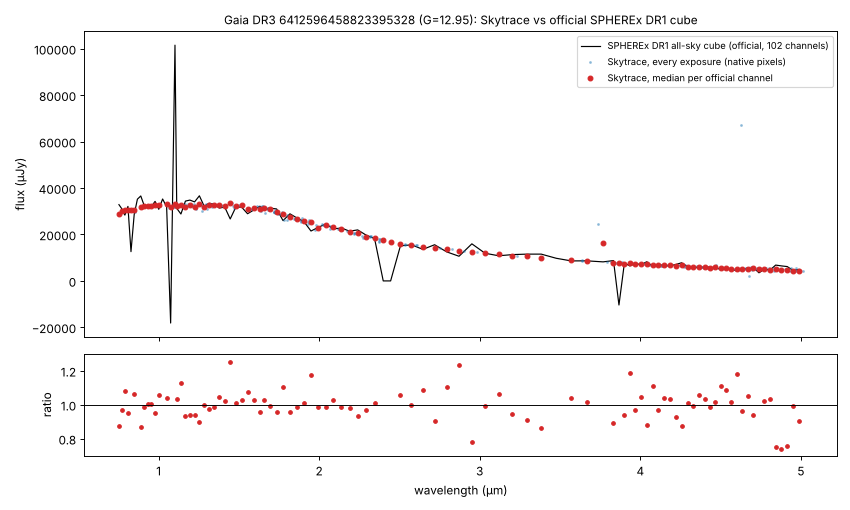
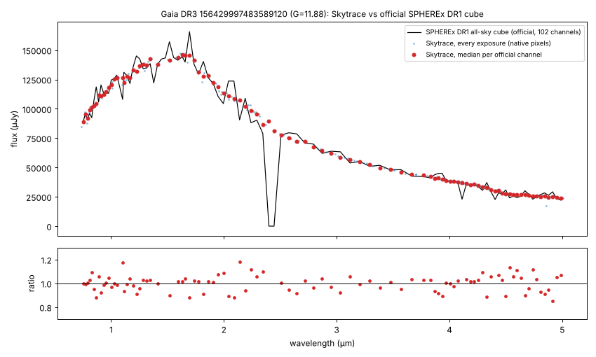
0.2 Problems that verification caught (all fixed)
| Problem | How it was found | Fix and re-test |
|---|---|---|
| Background ring excluded SPHEREx's SOURCE flag, which covers almost every pixel near bright stars. 47–100% of bright-target measurements had no local background or error bar. | Re-measuring with a different grid centre changed one flux by 0.16% | The ring now excludes only saturated or masked pixels, with a 3σ-clipped median. Synthetic star recovered to −0.13%. Error bars missing: 0% (7 saturated R Dra exposures flagged). Re-measurement with a different grid: identical (10/10). |
| A dropped network request made Epsilon Indi B silently build from 120 of 458 images. | The exposure count changed between builds | Each collection query is retried, and the build fails rather than producing partial data. Every field records archive / requested / read counts. Independent SIA2 check: all fields complete. (R Dra: IRSA lists 2,493 images; capped at 700, spread evenly in time.) |
| Photometry changed by up to 0.8% with grid placement. | Prototype 1 report | Measured on original detector pixels. Identical across grids. |
| My first cube comparison was 15% off. | Skytrace matched WISE but not the cube | My script used the HPX projection-plane pixel area, which is 3π/8 = 1.178× the true HEALPix sky area. Notebook 6 does this correctly. Fixed in the test, not the app. |
0.3 New features from WiseView, verified
- The epoch legend shows which visits each frame adds (+), subtracts (−) or leaves out (·).
- Shift-and-add along a chosen proper motion (default: the target's). Test: Epsilon Indi B's centroid stays within ~0.1 px across four visits with shift on, and drifts up to 0.77 px with shift off.
- At these speeds (about 1 pixel of motion per year), shift-and-add does not yet raise the peak, because the resampling blurs about as much as the motion would. It should help for faster or fainter movers.
Live server: a new position typed as sexagesimal coordinates returned 290 images in 65 s, identical to IRSA's independent count; reload from the URL took 0.8 s. WISE photometry re-check with the final pipeline: 0.976 (W1), 0.989 (W2).
1. Tutorial replication summary
| Notebook | Ran | Published values checked | Key result |
|---|---|---|---|
| 1 Data Overview | yes | 12 / 12 match | 443 images at (304.69, 42.44). 6-extension file structure. Wavelength at the reference pixel 0.90417 µm. N_SOURCE = 4,135,535, re-counted from the FLAGS bits myself. |
| 2 Spectral Image Cutouts | yes | 1 / 1 match | 84 D2 images of M101. Cutout service failures: 19 (serial) and 10 (parallel) of 84. The published run also had failures (4 and 16). |
| 3 PSF Models | yes | 12 / 12 match | 454 images. ePSF zone row 422 (BINX 2, BINY 20). N_eff 4.379 px. λ 2.433 µm. 21×21 zones. Total-flux checks 1.000. |
| 4 Source Discovery Tool | yes | none published | 295 images. SExtractor found 142 objects in the D2 − D4 difference image. 99 of 284 cutouts failed with HTTP 503. Image count reproduced independently (282 + 8 QR3 + 5 edge images = 295). |
| 5 Mosaic Cube | yes | 4 / 4 match | M101 cube at 9″/px. PAH feature plane 63 (3.293 µm). GALEX position matches. |
| 6 HiPS All-Sky Cube | yes | 6 / 6 match | Layer 62 ≈ 3.3 µm. Orders 0–5. HEALPix pixel 445. Cube shape (102, 512, 512). |
Environment: Python 3.13, astropy 8.0.2, astroquery 0.4.11, photutils, SExtractor 2.28. Notebooks from github.com/Caltech-IPAC/irsa-tutorials (main, 14 Nov 2026), executed unmodified with jupyter nbconvert. One published inconsistency: notebook 1's text says the example image is detector 2, but its own printed output (and ours) says detector 1.
2. What each notebook taught us, with our outputs
Notebook 1: one SPHEREx file, all extensions
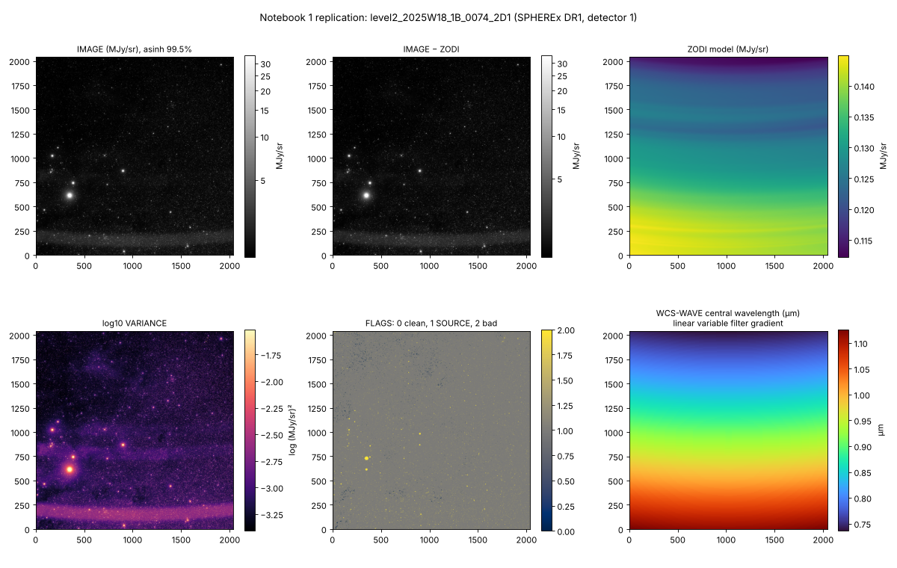
Notebook 2: cutouts of M101 at different wavelengths
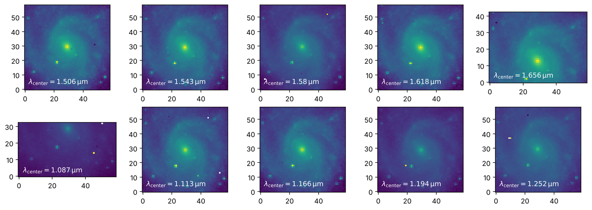
Notebook 3: point spread function
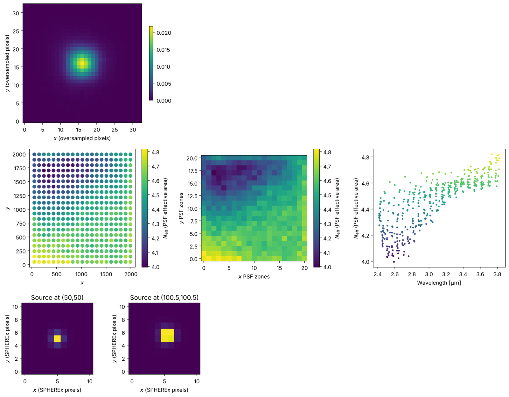
Notebooks 5 and 6: what 102 channels reveal
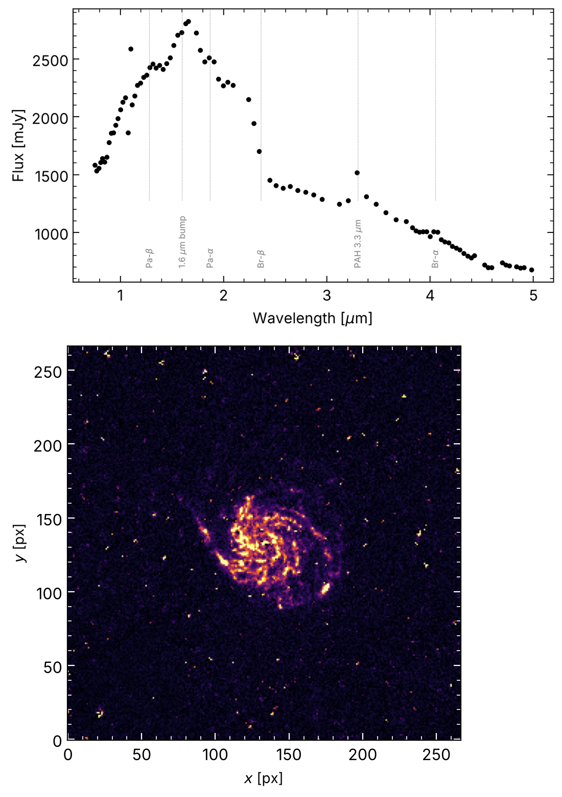
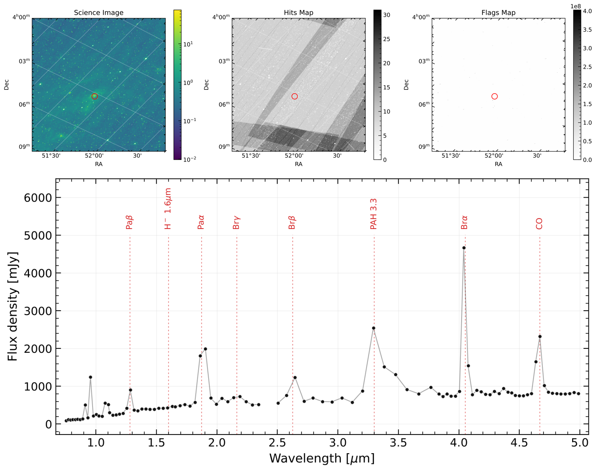
3. Skytrace verified against the tutorials and independent data
3.1 Same M101 data, tutorial vs Skytrace
| Check | Result |
|---|---|
| Same exposures | All 74 tutorial cutouts are in Skytrace. Skytrace also has the 10 that failed at the cutout service. |
| Wavelength assigned to each exposure | Median difference 0.002 nm, max 0.073 nm (target positions 0.6″ apart). |
| Raw pixels: Skytrace S3 byte-range read vs IRSA cutout | Identical (maximum difference 0). |
Resampling: Skytrace vs astropy reproject | Median |difference| 0.0001 MJy/sr. 99th percentile 0.4–1.2% of peak, only at pixels Skytrace masks on purpose. |
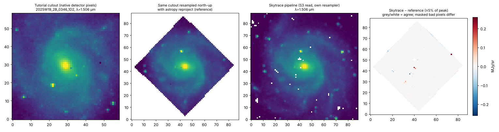
3.2 Photometry vs NASA WISE (independent mission)
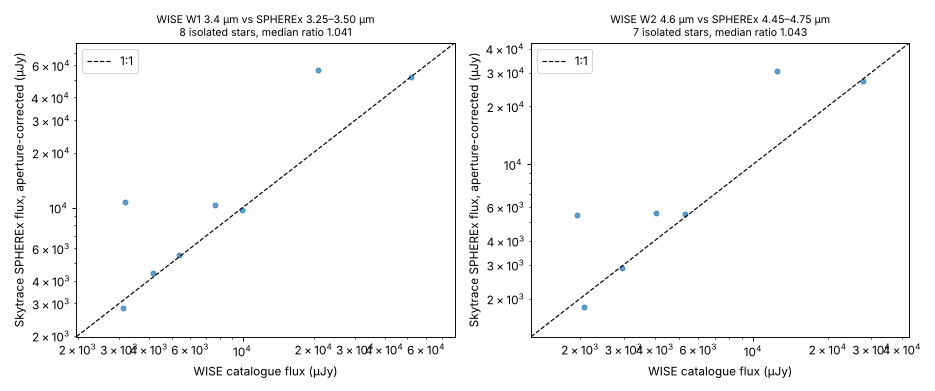
3.3 Aperture correction (fix applied)
From 27 real DR1 ePSFs per detector, a 2-pixel aperture holds 97.2% (D1), 97.0% (D2), 96.0% (D3, D4) and 95.8% (D5, D6) of a star's light, with less than 1% variation. Skytrace now divides by these values. A fresh build reproduces the corrected stored fluxes exactly (difference 0) when the grid centre is the same.
Remaining issue: photometry on the resampled grid shifts by up to 0.8% when the grid centre moves. Prototype 2 should measure on the original detector pixels.
3.4 WISE 0855: three datasets, one track
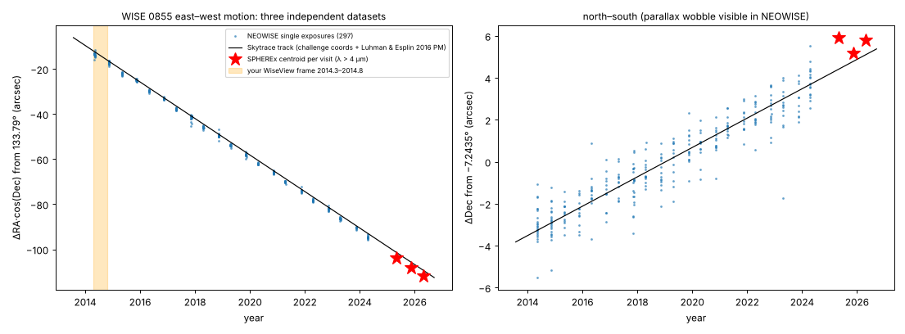
- NEOWISE proper motion fit: −8.13, +0.66 ″/yr. Skytrace uses −8.10, +0.70 ″/yr. Agree within 0.04 ″/yr.
- Track positions agree with NEOWISE to within 1.0–1.4″ in 2014 and 2025 (0.2 SPHEREx pixel).
- SPHEREx centroids sit 2.3–2.8″ (0.4 px) from the straight-line track. The likely causes are the background star 8.8″ away (Gaia DR3 5756956644387831296, G = 16.3) and WISE 0855's ~0.4″ parallax, which the straight line ignores.
- WISE 0855 is detected at S/N 26–38 per visit above 4 µm and is invisible at short wavelengths, as expected for a ~285 K brown dwarf.
3.5 Earlier checks (Prototype 1)
- Gaia DR3 stars fall within 0.04 px (median) of SPHEREx peaks in all five fields.
- Barnard's Star and Epsilon Indi B follow their Gaia proper motions within 0.1 px per visit.
- Epsilon Indi B is the only mover the finder reports in its field (34.6σ), with no false candidates.
4. WiseView: what we verified from its source code
The WiseView source (github.com/backyardworlds/wiseview, public domain) was read directly:
- The web page sends every setting to a separate AWS Lambda endpoint (
png-animation) that builds the frames. That server code is not in the public repository, so its exact stacking cannot be inspected. - Frames come from a sliding time window in years. Difference mode subtracts a second window (
neg_epochs). The+ − .legend shows which epochs each frame adds, subtracts or skips. - Shift-and-add moves frames by a chosen proper motion (in 2.75″ unWISE pixels) so a mover stays put and builds up signal. Synthetic sources can be injected to test what is detectable.
- Your screenshot shows
sizeis in arcseconds: about 64 unWISE pixels × 2.75″ = 176″. - The WiseView link in the challenge resources is centred exactly where WISE 0855 was in 2014.47 (0.05″ from our track). In your first frame (2014.3–2014.8) the faint smudge at the image centre should be WISE 0855.
Ideas worth copying into Skytrace (none built yet): the per-frame epoch legend; shift-and-add along a chosen proper motion; synthetic-source injection; click-to-recentre.
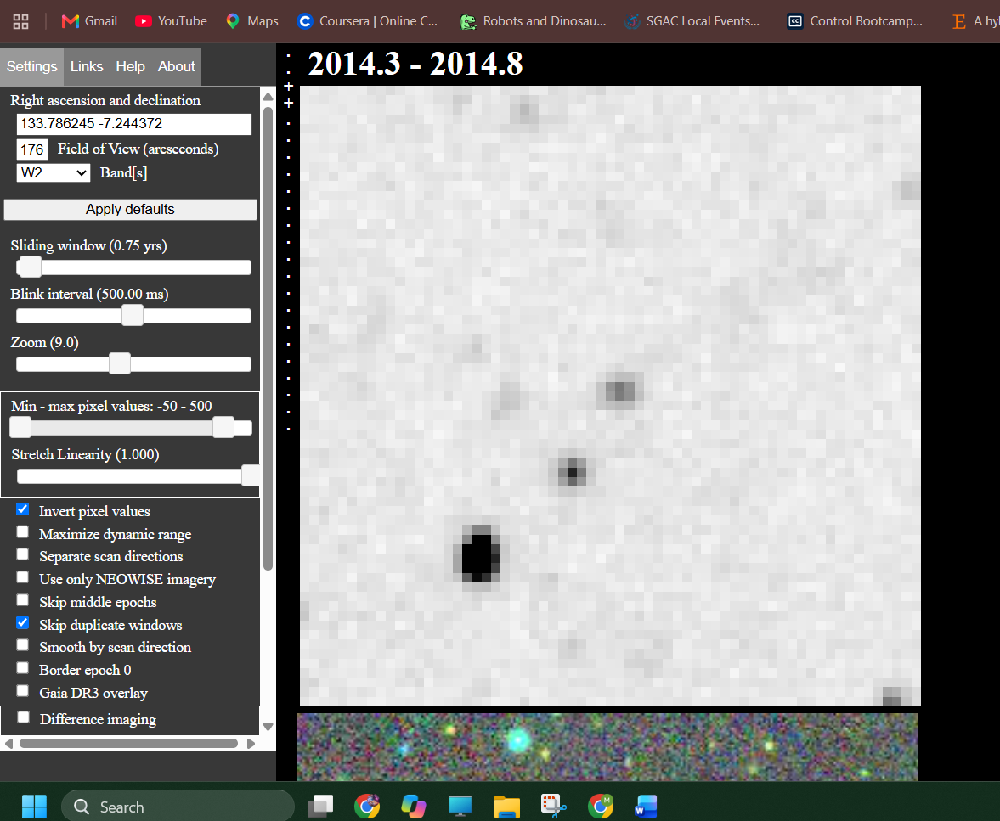
5. Problems and open items
- IRSA cutout service reliability: HTTP 503 errors on 12–35% of requests in notebooks 2 and 4 today. Skytrace reads from the AWS S3 mirror and had no failures.
- Saturation: Barnard's Star, RW Aur and R Dra are saturated in most exposures; their photometry is flagged and not science-grade.
- Photometry depends at the ~1% level on grid placement (fix: measure on native pixels).
- Mover-finder speeds are rough (Epsilon Indi B ~8″/yr measured vs 4.7″/yr true).
6. Reproduce
Scripts in the Skytrace repository under tests/:
xval_m101.py: tutorial vs pipelinephotval.py: WISE photometryee_all.py: aperture correctionneowise_w0855.py: WISE 0855 trackrender_intro.py,extract.py: notebook outputsui_test.py,live_test.py: browser tests
Data: SPHEREx DR1/QR3 (NASA/IPAC IRSA). Gaia DR3 (ESA), CatWISE2020 and NEOWISE-R single-exposure source table, all via IRSA TAP. WISE 0855 proper motion: Luhman & Esplin (2016). Portions of the analysis code were generated with Claude (Anthropic) and reviewed by team Skytrace.